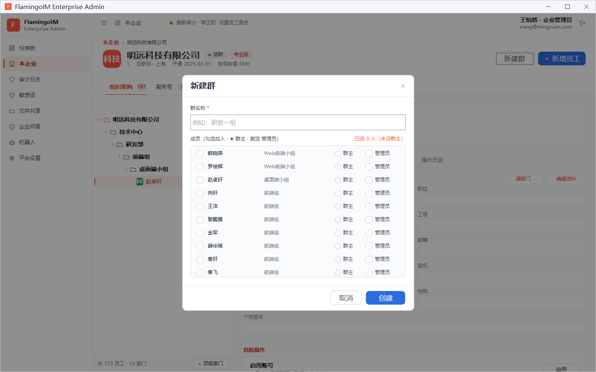
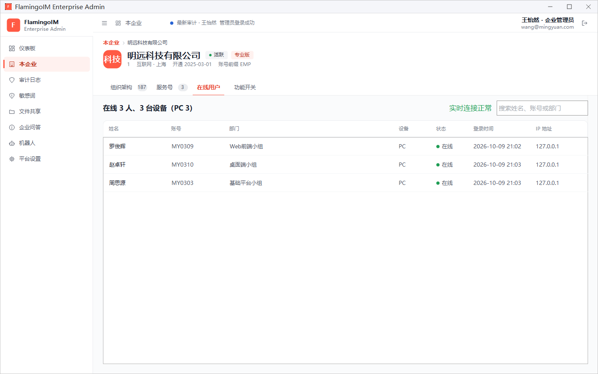

建群与在线用户
本章介绍两项「本企业」页面里的功能：管理员直接为部门或项目建群并指定群主和管理员，以及实时查看本企业有哪些员工在线、用的是什么设备。
- 适用：企业管理员
- 位置：「本企业」页面右上角的「新建群」按钮；「本企业」→「在线用户」页签
- 需要（在线用户）：服务端开启了管理台长连接
为部门或项目建群
新成立的部门、临时项目组，往往需要一个包含指定成员的群。管理员可以在控制台里直接建好群、指定群主和管理员，不必等员工自己去拉人。

- 在「本企业」页面切到 组织架构 页签，点右上角的 新建群。
- 填写 群名称（必填），例如「研发一组」。
- 在成员列表中勾选要加入群的员工。每行右侧显示该员工所在的部门。
- 点某位成员右侧的 群主 单选框，把他设为群主。群主只能有一位，选了新的群主，原来的选择会自动取消。
- 按需勾选几位成员右侧的 管理员。
- 核对列表右上角的人数统计，例如「已选 8 人」，然后点 创建。
创建成功后提示「群已创建，成员将在自己的群组界面看到该群」，群成员在客户端的群组列表里就能看到这个群。之后群的日常管理由群主和群管理员在客户端完成，见「群管理」。
必须指定群主人数统计后面出现「（未设群主）」时不能创建，会提示「请填写群名称并指定群主」。设为群主或管理员的成员会自动勾选加入；同一个人不能同时是群主和管理员；取消勾选某位成员时，他的群主或管理员身份也一并取消。
查看在线用户
「在线用户」页签实时显示本企业当前在线的员工。员工登录、退出或切换状态后，列表会自动更新，不需要手动刷新。

- 标题行：在线人数与设备数，括号里按设备类型分别计数，例如「在线 3 人、3 台设备（PC 3）」。
- 连接状态：标题右侧显示与服务器的实时连接状态。实时连接正常 表示数据是实时的；连接断开时会显示「连接已断开」并自动重连。
- 搜索框：输入姓名、账号或部门，筛选列表。
- 列表：姓名、账号、部门、设备、状态（在线、离开或勿扰）、登录时间 和 IP 地址。
想让某位员工下线，请在组织架构中选中他，到「设备登录」页签点「强制下线全部设备」。
看不到「在线用户」页签，或页签里提示无法查看这个页签由管理控制台程序目录里的
FlamingoLink.dll 提供，缺少这个文件时页签不会出现。页签里提示「服务器未开启实时连接，无法查看在线用户」时，说明服务端没有开启管理台长连接端口（聊天服务器配置项 adminlinklistenport），请联系服务器的部署人员。